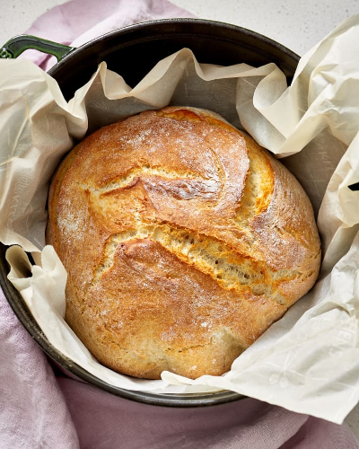

No Knead Bread

Description
Freshly baked bread can become a feature of your daily life and it doesn't require much effort or preparation, but only a little bit of good advance planning.
It only requires four ingredients and a heavy pot with a tight fitting lid good to go in the oven. The recipe takes 14 to 17 hours from start to finish but you only actively participate for about 10 minutes altogether. The dough can proof overnight or you can start it in the morning adding just a little bit more yeast (because it will be proofing for a shorter period of time) and bake it before going to bed. If you are in a rush you can even make it in about 5 hours by adding a full tsp of yeast.
Ingredients
- 1 lbs bread flour
- 1/3 tsp active dry yeast
- 1 1/4 tsp salt
- 1 1/2 cups warm water
Steps
- Add flour to a big bowl
- Add yeast
- Add salt
- Add water
- Mix to incorporate all ingredients. No kneading required, unless you really want to
- Cover with plastic wrap
- Leave overnight or for 12-14 hours. The shorter the proofing time, the more yeast it will require
- Fold one time in the morning, leave to proof for another 30 minutes
- Preheat the oven with the covered pot to 450F
- Take the pot out (CAUTION! HOT!), place the dough inside, and close the lid. Bake for 25 minutes
- After 25 minutes take the lid off (CAUTION! HOT!) and bake for additional 14 minutes
- Remove from the oven and let rest on the wire rack